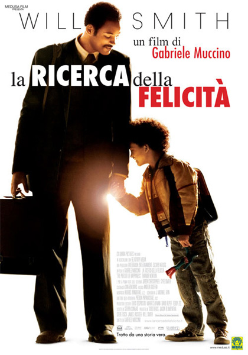

Chris Gardner è un uomo determinato che lotta per costruirsi una vita migliore per sé e per suo figlio, nonostante la povertà, le difficoltà e le avversità. Attraverso sacrifici, resilienza e incredibile perseveranza, Chris cerca di trasformare i propri sogni in realtà, dimostrando che la speranza e la determinazione possono portare alla felicità.
Regia: Gabriele Muccino
Cast: Will Smith, Jaden Smith, Thandie Newton